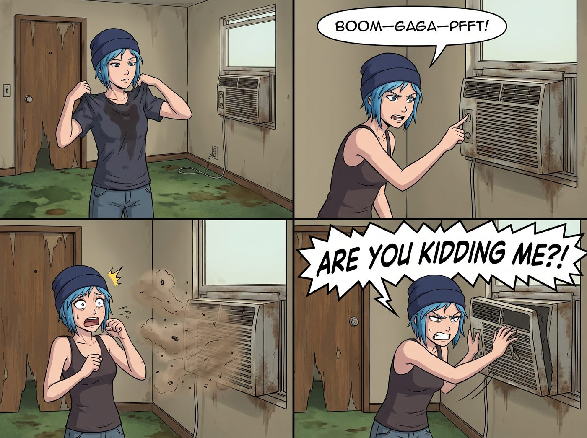

撐不住的窮遊

關於加州的氣候，許多沒有來過西海岸的人總有一種美好的濾鏡，以為這裡一年四季都是溫暖如春、微風不燥。
這話只說對了一半。加州的海岸線確實涼爽，太平洋的霧氣會替聖塔克魯茲和大蘇爾擋掉夏天的暑氣；但只要離開海岸、往內陸開上幾十英里，那就是另一個世界。越過那道山脊，陽光會把柏油路面烤得發軟，空氣乾燥得一點就著，每年夏天都有山火的新聞。
偏偏，離開星光大道之後，Chloe 為了避開海岸公路的週末車潮，把皮卡開進了洛杉磯北邊的內陸山谷。
當她把車停在一家每晚只要八十美元的平價汽車旅館前時，傍晚的氣溫依然高達華氏九十五度，也就是攝氏三十五度。
這家旅館完美符合窮遊的標準：掉漆的木門、散發著霉味的化學地毯，以及鑲嵌在牆壁上、鏽跡斑斑的窗型冷氣機。
「沒關係，只要有冷氣，我連睡在浴缸裡都可以。」
Chloe 一把扯下被汗水浸透的 T 恤，走過去用力按下了那台老舊冷氣的開關。
「轟——嘎嘎嘎——噗！」
冷氣機發出了一聲猶如拖拉機引擎報廢般的悲鳴，吐出一口夾雜著灰塵與死蚊子的熱風，然後，徹底罷工了。
「妳在跟我開玩笑嗎？！」Chloe 崩潰地狂拍著冷氣外殼，「這裡是加州！全美國最富裕的州！你們的 GDP 比整個法國還高，結果你們的汽車旅館連台能製冷的機器都沒有？！」
一、人間煉獄
那個晚上，簡直是一場人間煉獄。
房間裡的窗戶被油漆封死了，打不開，熱氣像一個巨大的蒸籠將她們死死裹住。為了降溫，兩人輪流去浴室沖了三四次冷水澡，但只要一擦乾身體，五分鐘後又是一身大汗。
最後，她們徹底放棄了矜持。兩個人脫得只剩下最基本的內衣褲，毫無形象地呈大字型癱在散發著劣質洗滌劑味道的床單上。
Max 從背包裡翻出了一個原本用來給相機散熱的 USB 迷你小風扇，插在行動電源上。
這台直徑不到十公分的小風扇，成了這間地獄客房裡唯一的救贖。Chloe 甚至無恥地整個人湊過去，幾乎要把臉貼在扇葉的防護網上。
「超級麥克斯……」Chloe 氣若游絲地呻吟著，「如果我今晚熱死在這裡，請把我的骨灰撒在二號車廂的空調出風口……」
Max 滿頭大汗地看著她。原本應該有點浪漫或親密的共處時刻，在這種能讓人中暑的高溫下，只剩下了純粹的求生慾。
「明天……」Max 咬著牙，一字一頓地說，「明天我們就去住一間有中央空調的飯店。去他媽的窮遊原則，我不想變成一塊烤熟的奧勒岡馬鈴薯。」
二、背叛
第二天中午，兩個頂著黑眼圈、精神萎靡的女孩，毫不猶豫地背叛了街頭法則。
她們開著皮卡，直接殺進了市區一家四星級的連鎖商務飯店。
「我們要一間中央空調最強的雙人房。」Chloe 把一疊現金拍在櫃台上，「用現金結帳。不需要發票，不需要任何會員積分。」
前台接待員帶著職業微笑收下現金：「沒問題，女士。不過根據飯店規定，即使您使用現金支付房費，我們依然需要您提供一張信用卡作為雜費預授權的擔保。這筆一百美元的押金在您退房時會全額解凍，不會產生實際扣款。」
Chloe 愣了一下。但感受著大廳裡涼爽的冷氣，她的大腦已經無法進行任何複雜的防禦思考了。
「反正只是預授權，又不是真的扣錢。」她在心裡嘀咕著，從錢包裡隨手抽出一張卡刷了下去。
那是她這一路上加油、過橋、刷殼牌積分時用的那張卡。熱昏了頭的她，完全沒注意到卡面上印著的，是營地的名字。
五分鐘後，她們刷卡進入了那間鋪著純白床單、冷氣開到攝氏十八度的客房。
「這才是人類該有的文明……」Chloe 發出一聲滿足的嘆息，直接撲到了柔軟的大床上，把自己像個蠶寶寶一樣死死裹在厚實的羽絨被裡。Max 也舒坦地躺在旁邊，感受著冷氣吹拂在皮膚上的救贖感。
就在她們準備閉上眼睛補眠的那一刻——
「叮鈴鈴——叮鈴鈴——」
床頭櫃上的座機電話，突然以一種極度不祥的節奏響了起來。
Chloe 和 Max 瞬間僵住了，驚恐地對視了一眼。在這個沒有人知道她們行程的城市裡，有誰會打這間客房的電話？
Max 顫抖著伸出手，按下了免持聽筒鍵。
三、盜刷警示
「午安，Chloe 學姐。午安，Max 學姐。」
電話那頭，傳來了 Lily 那軟糯、平靜的嗓音。
「Lily？！」Chloe 猛地從被子裡彈起來，「妳怎麼會知道我們在這裡？！妳不是答應過啟動什麼語義盲區，不監視我們的嗎？！」
「我確實沒有監視您們，學姐。是您用營地的公務卡，刷了一筆飯店的預授權。」
Chloe 手忙腳亂地翻出錢包，看了一眼那張卡，臉瞬間白了。
「這張卡這一路上只出現過加油站和收費站。」Lily 平靜地解釋，「五分鐘前，發卡行突然推送了一筆來自四星級飯店的預授權通知，商戶類別跟過去所有紀錄都對不上。這在風控上是典型的盜刷特徵，發卡行問我要不要凍結這張卡。」
「所以……」Max 小聲說。
「所以我打了這家飯店的總機，請他們幫我轉接一位叫 Chloe Price 的房客。」Lily 說，「他們不會告訴我房號，但會幫我轉接。如果轉接不到，我就會凍結卡片並報案。幸好接起來的是您們。」
Chloe 張了張嘴，一時間不知道該生氣還是該鬆一口氣。
「預授權退房時就會解凍，我會通知發卡行這筆是本人消費。房費是您們自己的錢，怎麼花都可以。」Lily 頓了頓，「只是下次，請不要再用公務卡刷私人住宿了。」
「知……知道了。」Chloe 難得地乖乖應了一聲。
電話那頭安靜了一秒。然後，Lily 的聲音裡帶上了一絲極其細微的、屬於黑魔法師的笑意：
「另外，我記得出發前有人說過，這是一場有骨氣的窮遊。原來兩位，也有撐不住的時候。」
「Lily！！」Chloe 抓狂的怒吼聲，在冷氣十足的客房裡迴盪。
四、營地資產
Max 裹著被子，看著崩潰抓頭髮的 Chloe，忍不住笑出了聲。她伸手拿起床頭那台可憐的 USB 小風扇，準備把它扔進垃圾桶。
「對了，Max 學姐。」
電話還沒掛斷。
「那台 USB 小風扇，是營地去年為相機散熱採購的器材，登記在資產清單上。請記得帶回來。」
Max 的手，停在了垃圾桶上方半公尺的地方。
「……妳是不是在房間裡裝了攝影機？」
「沒有，學姐。我只是很了解您們。」Lily 乖巧地說，「祝您們吹冷氣愉快。再見。」
電話掛斷了。
Max 默默地把小風扇收回了背包裡。
窮遊結束了。但在這場與行政黑魔法師的貓鼠遊戲裡，能在十八度的冷氣房裡安穩地睡上一覺，哪怕代價是被那個小惡魔笑上半年，也絕對是值得的。